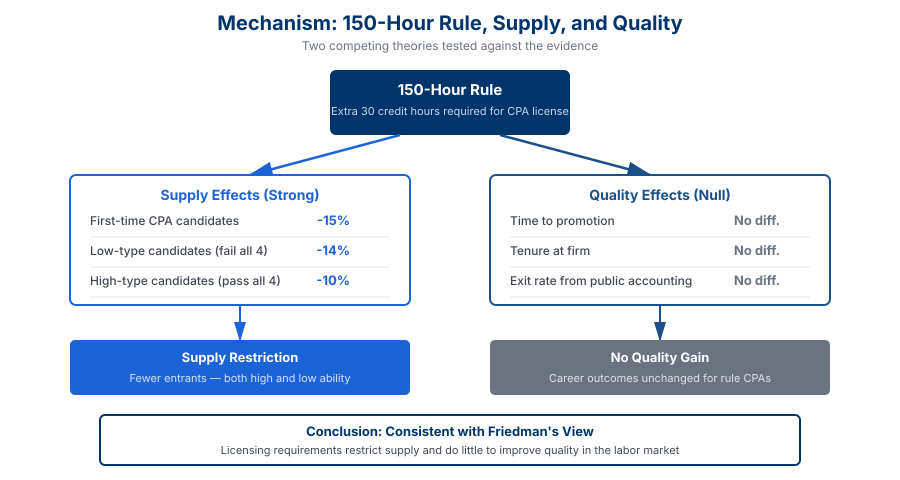

Occupational Licensing and Accountant Quality: Evidence from the 150-Hour Rule Lead Article Award
Abstract
I examine the effects of occupational licensing on the quality of certified public accountants (CPAs). I exploit the staggered adoption of the 150-hour rule, which increases the educational requirements for a CPA license. The analysis shows that the rule decreases the number of entrants into the profession, reducing both low- and high-quality candidates. Labor market proxies for quality find no difference between 150-hour rule CPAs and the rest.
Moreover, rule CPAs exit public accounting at similar rates and have comparable writing quality to their nonrule counterparts. Overall, these findings are consistent with the theoretical argument that increases in licensing requirements restrict the supply of entrants and do little to improve quality in the labor market.
Key Findings
Reduced Entry into the Profession
The 150-hour requirement led to a 15% reduction in the number of first-time CPA candidates. Critically, this reduction came from both low-ability and high-ability candidates, suggesting the extra year of education was costly even for strong students with high opportunity costs of time.
No Improvement in Labor Market Quality
Labor market proxies for individual quality—time to promotion and tenure at firm—find no significant difference between rule and nonrule CPAs. Comparing rule audit partners to nonrule audit partners likewise shows no difference in time to achieving partnership.
No Change in Professional Commitment
Rule CPAs exit public accounting at similar rates and on comparable timelines to their nonrule counterparts. Written communication quality, measured from résumé job descriptions, is also comparable across groups.
Supply Restriction Without Quality Gains
The findings are consistent with the Friedman view that licensing requirements restrict the supply of entrants and extract rents for incumbents, rather than the public-interest view that licensing enhances professional quality.
Figures

Figure 1. The 150-hour rule reduced first-time CPA candidates by 15%, affecting both low- and high-ability test-takers, while labor market proxies for quality detect no improvement in career outcomes.

Figure 2. The 150-hour rule increased the cost of entry, reducing both low- and high-type candidates. Labor market outcomes and professional commitment measures show no accompanying quality improvement — consistent with supply restriction and rent extraction rather than quality enhancement.
Research Contribution
This study makes several contributions to the literature on occupational licensing, professional regulation, and labor markets. First, it comprehensively examines the rule's effect on the accounting labor market. Using a stricter difference-in-differences design at the university level, the paper extends prior studies by documenting that the reduction in supply does not come solely from fewer low-type candidates but also from fewer high-type candidates — rendering inference on quality from pass rates alone inconclusive.
Second, the paper's novel data and measures illustrate a promising approach for capturing differences in the quality of individual auditors and CPAs. The use of CPAs' résumés and labor market measures of individual career outcomes offers a path forward to separate the effects of auditor human capital from that of the firm's employees.
Third, the paper contributes to the broader economics literature on occupational licensing, which affects nearly 30% of the U.S. labor force. The rule's supply reductions combined with the lack of a quality effect cast doubt on the benefits of licensing restrictions in U.S. labor markets. The rule serves as an ideal setting for providing insights on the costs and benefits of changes in mandatory general education in other high-skilled professions such as law and medicine.
Policy Implications
The findings have important implications for professional licensing policy. The evidence that the 150-hour requirement reduces entry — including high-ability candidates — without improving measurable quality suggests that educational credentialing requirements should be carefully scrutinized. The additional year of education appears costly even for strong candidates, potentially because of their higher opportunity cost of time.
The null quality result is informative: labor market proxies for quality, professional commitment, and communication skills all fail to show improvement. This is consistent with the view that the rule functions primarily as a barrier that restricts supply and generates rents for incumbents, rather than enhancing the quality of the profession as its proponents claimed.
More broadly, the paper speaks to ongoing debates about occupational licensing in the United States, where nearly 30% of workers require licenses. The relative merits of increased mandatory educational requirements for other highly skilled licensed professions — such as law and medicine — have also come under criticism. The 150-hour rule serves as an ideal setting for understanding the costs and benefits of changes in mandatory general education requirements.